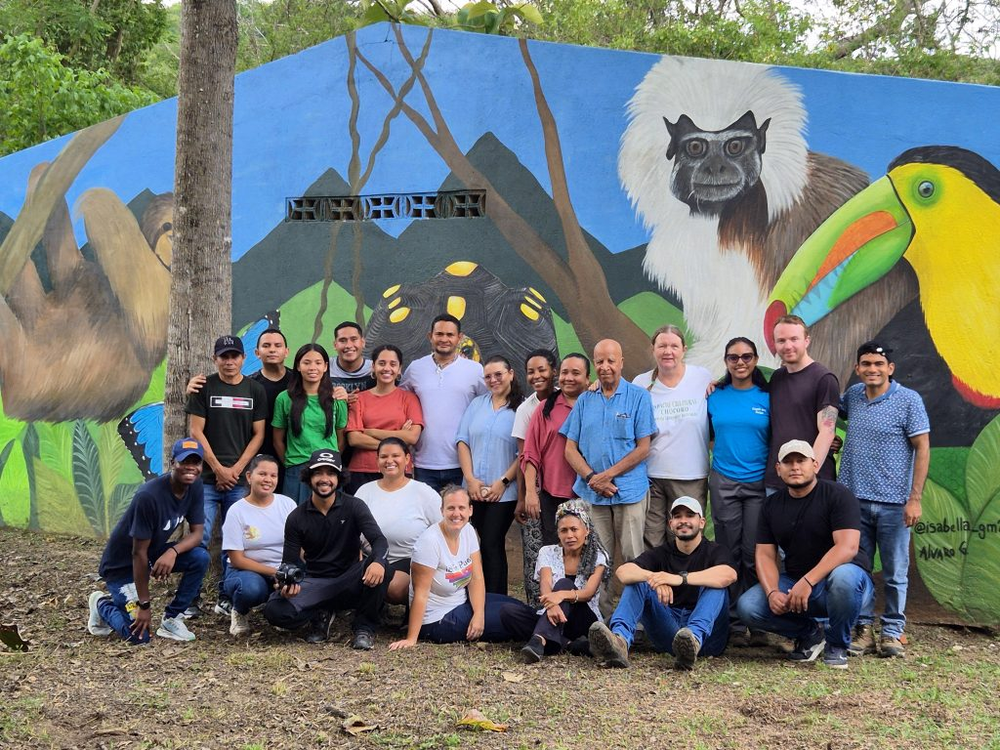
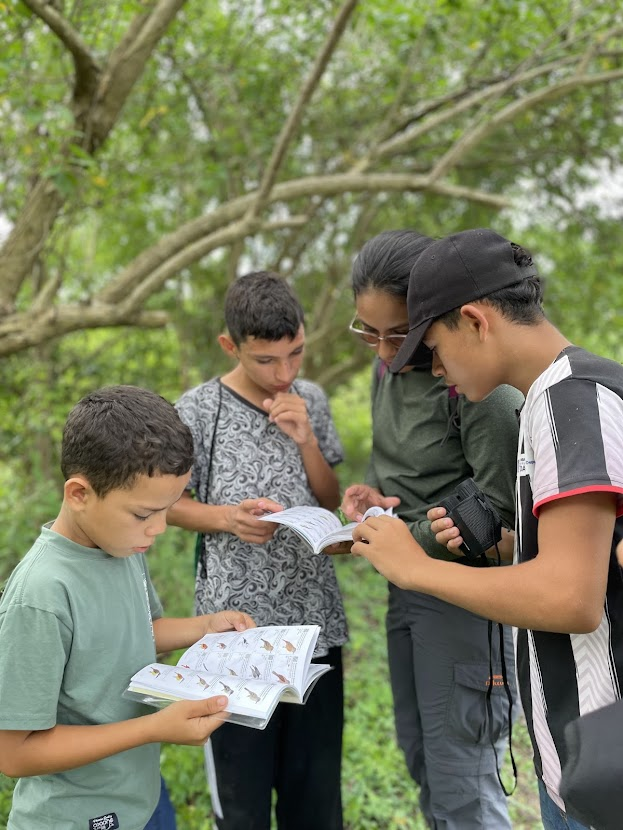
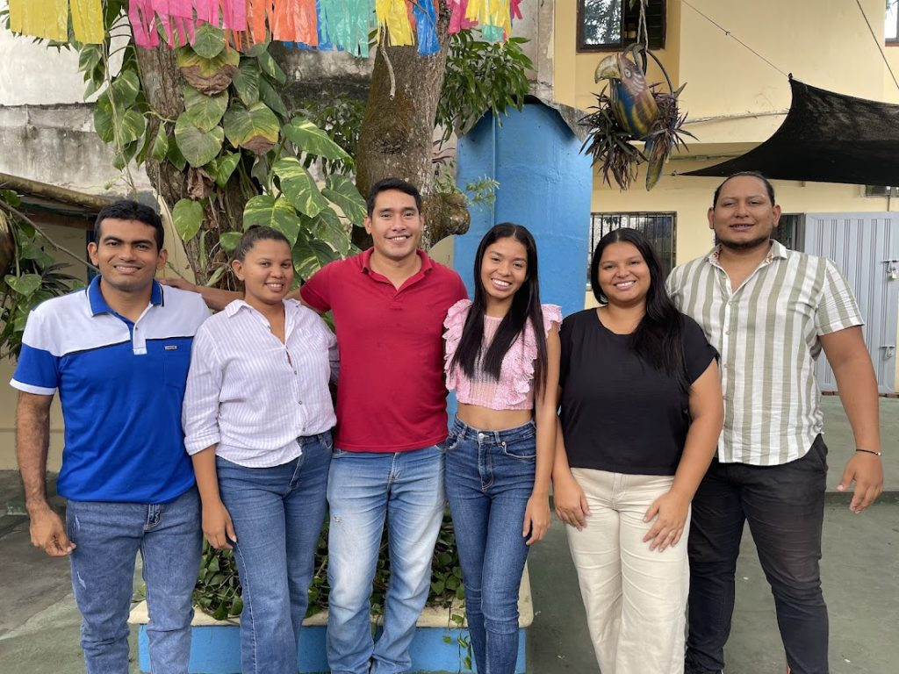

Who we are
Sembrandopaz is a grassroots peacebuilding organization committed to creative transformation towards holistic life plans that are sustainable, just, and nonviolent, through pedagogical empowerment.


What we do
Sembrandopaz is dedicated to facilitating the cultivation of peacebuilding capacities among grassroots organizations, with the goal of supporting processes of integral and sustainable human development within the populations of the Caribbean region in Colombia.
Our impact
Across the sub-region of Montes de María, we accompany communities, grassroots organizations and local leaders to create impactful changes in their lives, towards sustainable and peaceful livelihoods.


Get involved
There are an unlimited number of ways to get involved in our work. No matter where you live or what gifts you bring, you are welcome to join us!